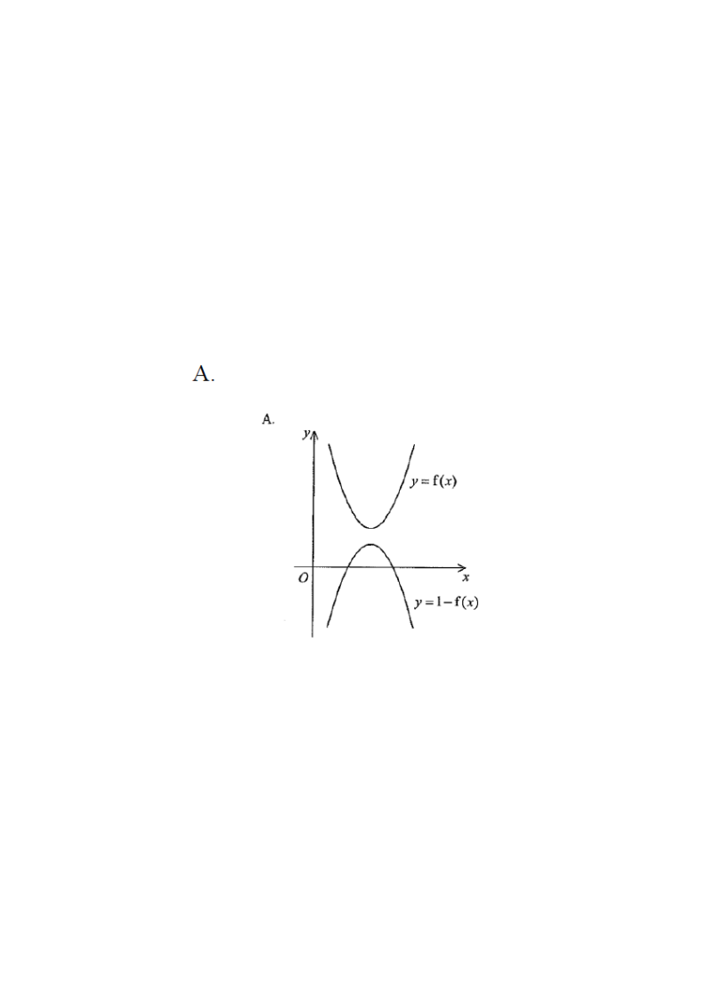

HKDSE 2014 · Paper 2 · Q38Graphs of y = f(x) and y = 1 − f(x)
Topic 7 — Functions and Graphs · Graph transformations
Interactive Figure
y = f(x) y = 1 − f(x) mirror line y = 0.5
Step 0: Press "scroll" on the right or click here to reveal the transformation step by step.
[2014 MC #38]
Which of the following may represent the graph of $y=f(x)$ and the graph of $y=1-f(x)$ on the same rectangular coordinate system?
The options show a parabola-like curve $y=f(x)$ (opening upwards) together with a second curve claimed to be $y=1-f(x)$.

Figure (original exam diagram)
1Read off the key feature of $y=f(x)$.
The given curve $y=f(x)$ is a U-shaped (upward) parabola with vertex at $(0,\;0)$, i.e. $f(0)=0$ and $f(x)\ge 0$ for all $x$.
Hint: the vertex touches the origin — the minimum value of $f$ is $0$.
2Apply the transformation $y = 1 - f(x)$.
\[ y = 1 - f(x) = -f(x) + 1 \]
Two operations: reflect $y=f(x)$ in the $x$-axis (giving $-f(x)$), then shift up by 1.
Hint: $-f(x)$ flips the curve upside-down; the "$+1$" moves it one unit up.
Reflection in the x-axis\(y=f(x)\ \longrightarrow\ y=-f(x)\)The minus sign turns the upward curve \(y=f(x)\) into a downward curve.
3Locate the vertex of $y=1-f(x)$.
Since $f(0)=0$, the new curve has value $1-f(0)=1$ at $x=0$.
Since $f(x)\ge 0$, we get $1-f(x)\le 1$ — so $x=0$ gives the maximum.
Vertex of $y=1-f(x)$: $\;(0,\;1)$, which lies above the $x$-axis.
Hint: the reflected curve's vertex is at $(0,1)$, not on the axis.
Vertical Translation\(y=g(x)\ \longrightarrow\ y=g(x)+c\)Adding \(1\) lifts every point of \(y=-f(x)\) one unit up, so \(f(0)=0\) becomes \(1\).
4Check the shape (opens downwards).
Reflecting an upward parabola in the $x$-axis gives a downward parabola. So $y=1-f(x)$ is a $\cap$-shape with maximum $1$ at $x=0$.
Hint: reflection reverses "opens up" to "opens down".
5Compare with the options.
The correct option must show:
• $y=f(x)$: ∪-shape, vertex at the origin $(0,0)$;
• $y=1-f(x)$: ∩-shape, vertex at $(0,1)$ — entirely in the upper half-plane (never dips below the $x$-axis).
Hint: a curve dipping to the left of the $y$-axis with vertex below $y=1$ cannot be $1-f(x)$.
6Eliminate the incorrect option.
The option that shows $y=1-f(x)$ as a ∩-curve whose vertex is on (or below) the $x$-axis, and hence continues below the $x$-axis, is wrong: for all real $x$, $1-f(x)\le 1$, and at $x=0$ it equals exactly $1>0$. Only the option with the ∩-vertex at $(0,1)$ above the $x$-axis is possible.
Hint: test $x=0$ and check the sign of the whole curve.
Reflection in a Horizontal Line\(y=1-f(x)\iff y-\tfrac{1}{2}=-(f(x)-\tfrac{1}{2})\)So \(y=1-f(x)\) is the mirror image of \(y=f(x)\) in the line \(y= frac{1}{2}\), with vertex \((0,1)\).
Answer: the graph where $y=f(x)$ is a ∪-curve with vertex $O(0,0)$ and $y=1-f(x)$ is a ∩-curve with vertex $(0,1)$ above the $x$-axis.
Key idea: $y=1-f(x)$ is the reflection of $y=f(x)$ in the $x$-axis, then shifted $1$ unit up (equivalently, reflected in the line $y=\tfrac12$).
PRACTICESimilar question — try it yourself
Question. The graph of \(y=f(x)\) is a \(\cup\)-shaped curve with vertex at the origin, and \(f(x)\ge 0\) for all real \(x\). Describe the graph of \(y=3-f(x)\), giving its shape, its vertex and its maximum value.
Show the worked solution
Step 1. Write \(y=3-f(x)=-[f(x)-3]\): reflect \(y=f(x)\) in the \(x\)-axis, then shift \(3\) units up.
Step 2. Since \(f(0)=0\), the new curve has value \(3-f(0)=3\) at \(x=0\), so its vertex is \((0,3)\).
Step 3. Because \(f(x)\ge 0\), we get \(3-f(x)\le 3\), so \(3\) is the maximum value and the curve opens downwards.
Step 4. Hence \(y=3-f(x)\) is a \(\cap\)-shaped curve with vertex \((0,3)\), maximum value \(3\), lying entirely below the line \(y=3\).
Answer: \(\cap\)-shape, vertex \((0,3)\), maximum \(3\)